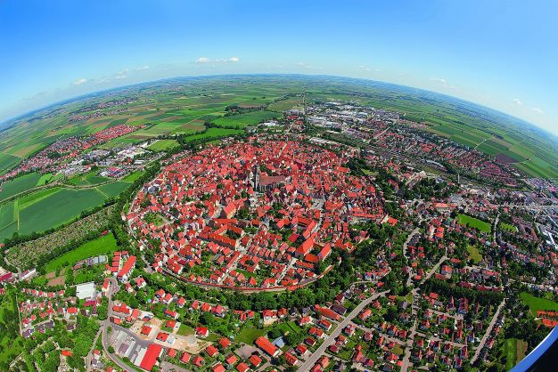

About Me

Hi, I'm Yuto Fukuda — a student in the College of Information Science and Engineering at Ritsumeikan University. I'm currently learning the basics of web development (HTML, CSS, and JavaScript), and this three-page site is the result of that work.
From October 2025 to April 2026, I worked in sales (as an appointment setter) at a venture company in Osaka, selling a B2B SaaS product. I set myself a personal goal of 10 appointments per month and achieved it by my third month on the job.
In my free time, I enjoy boxing, studying English, and traveling.
What this site covers
This three-page site was built for the Week 14 exercise: a Homepage (this page), a Portfolio page listing projects in a styled table, and a Trivia page with a small interactive BMI calculator written in JavaScript. Every page shares the same header, navigation bar, sidebars, and footer.